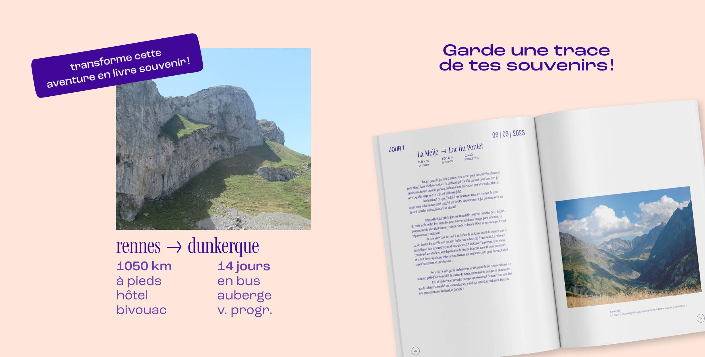
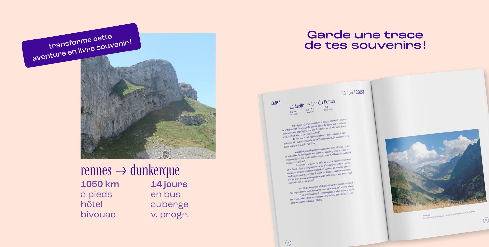

L’application Pérégrine est un support ayant pour but d’accompagner les voyageuses solitaires avant, pendant et après leur aventure. L’objectif a été de concevoir une interface sécurisée qui amène l’utilisatrice vers la contemplation et l’exploration. AVANT - aide à la préparation du voyage (via des témoignages et un espace d’échange solidaire) PENDANT - accompagne vers une aventure sereine et contemplative (via un journal de bord, collectes, espace safe…) APRÈS - offre une trace des souvenirs de chaque voyage (via la conception éditoriale d’un Livre Souvenir, et d’archives des anciennes aventures). La direction artistique de ce projet se base sur l’envie de donner envie de voyager, via des couleurs vives, des photographies venues d’Ailleurs et des pictogrammes dessinés inspirés de Pérégrine, ta copine d’aventure.

 
